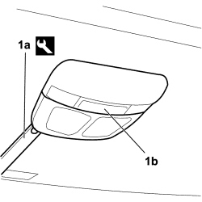
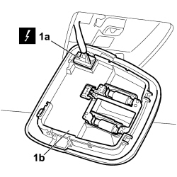

7040E46 REAR COURTESY LIGHT ASSEMBLY - R R
- Path
- Procedures > 70 FITTINGS > 7040 BODY INTERIOR FITTINGS AND TRIM > 7040E INTERIOR COURTESY LIGHT SYSTEM > 7040E46 REAR COURTESY LIGHT ASSEMBLY - R R
- Kind
- repair procedure (removal / refitting; the operation number is the code)
- Applies to
- all engines; all production periods
- Interactive page
- https://sloeber94.github.io/elrnDB-fCrm/en/#/194001053
Applies to: all engines; all production periods
 Removing
Removing
 Refitting
Refitting- Turn the ignition key to the OFF position.
- Open the bonnet.
- Disconnect the negative battery terminal.
Description | Connector | |
|---|---|---|
BATTERY |
1. Using the special tool (1a) release the rear courtesy light (1b) from the mountings and detach it from the roof.
Tool | Description | Function | Validity |
|---|---|---|---|
1878077000 | Knife | Retainer removal |

Applies to: all engines; all production periods
1. Disconnect the electrical connection (1a) and remove the courtesy light (1b) from the vehicle.
Description | Connector | |
|---|---|---|
1a | CENTRE REAR COURTESY LIGHT |

Applies to: all engines; all production periods
Refitting
Removing- Check that the courtesy light is not damaged.
- Connect the electrical connection.
Description | Connector | |
|---|---|---|
CENTRE REAR COURTESY LIGHT |
- Fit the courtesy light in its housing checking that it is correctly attached.
- Connect the negative battery terminal once again.
Description | Connector | |
|---|---|---|
BATTERY |
Topics linked from this page (2)
Topics that link to this page (22)
- 5505C41 PASSENGER COMPARTMENT WIRING - R.R
- 5570T61 MULTI-FUNCTION AERIAL - R R
- 5580C50 WINDOW BAG MODULE (ONE) LH OR RH - R.R
- 7015A14 TAILGATE - ADJUST CENTRING AND PROFILE - INCLUDES HINGE AND COMPARTMENT SEAL ADAPTATION
- 7015A24 TAILGATE HINGES - REPAIR OR REPLACE WITH TAILGATE REMOVED
- 7030B12 SLIDING ROOF (ASSEMBLY) - R+R
- 7030B29 ELECTRICALLY OPERATED SUN ROOF BLIND - R.R.
- 7030B37 FIXED GLASS BLIND - R.R
- 7030B39 SLIDING CURTAIN CABLE GUIDE DEVICE - R R
- 7030B43 SLIDING CURTAIN DRAGGING DEVICE - R R
- 7030B47 SLIDING ROOF CABLE GUIDE DEVICE - R.R
- 7030B48 SLIDING ROOF REAR FIXED GLASS PANEL - R.R.
- 7030B50 SUN ROOF SLIDING GUIDE (ONE), LH OR RH - R.R
- 7030B70 SUN ROOF MOVEMENT MOTOR - R+R
- 7030B74 SUN-ROOF CABLE LOOM - R.R OR REPLACE
- 7030B78 SUN ROOF BLIND MOVEMENT MOTOR - R.R.
- 7030B90 SLIDING ROOF FRAME - R R
- 7030B91 SLIDING ROOF ASSEMBLY CENTRAL CROSS MEMBER - R R
- 7030B92 REAR SLIDING ROOF CROSS MEMBER - R R
- 7040E56 FRONT MODULAR COURTESY LIGHT UNIT MOUNT R R WITH COURTESY LIGHT REMOVED
- 7040H16 ROOF PANEL LINING FOR VERSIONS WITH SUN ROOF - R.R
- 7040H23 COATING FOR SUN/SLIDING ROOF VERSIONS AND ANIMAL TRANSPORTATION GRID - R R